Peppe
Piergiuseppe Liuzzi
Legno ed edilizia
Ha studiato ingegneria, ma è terrone e manovale nel sangue: il suo forte sono legno ed edilizia.
Due artigiani, Firenze
Edilizia, pavimenti e piastrelle, impianti elettrici, falegnameria e boiserie, carta da parati. Piccole ristrutturazioni fatte a regola d’arte, da chi ci mette le mani.
Solo WhatsApp o SMS, niente chiamate.
Quando si lavora, si lavora: rispondiamo appena posiamo gli attrezzi.
Peppe e Sogos
Siamo Peppe e Sogos — Piergiuseppe Liuzzi e Daniele Sogos. Insieme ci occupiamo di piccole ristrutturazioni a Firenze: muratura, pavimenti, impianti, legno e finiture. Lavoriamo in prima persona, dal sopralluogo all’ultima stuccatura.
Piergiuseppe Liuzzi
Legno ed edilizia
Ha studiato ingegneria, ma è terrone e manovale nel sangue: il suo forte sono legno ed edilizia.
Daniele Sogos
Perito elettricista
Perito elettricista. Ferro, scaffalature, saldature. Ma davanti a un quadro elettrico è un mago.
Muratura, pavimenti, impianti, legno, carta da parati e bagni. Il preventivo è gratuito, su WhatsApp, dopo aver visto la casa.
Demolizioni interne, massetti, tracce, cartongesso, tinteggiatura e tutti quei lavori da muratore che tengono insieme un cantiere piccolo, fatto bene.
Posa di gres e ceramica a pavimento e a rivestimento, anche in bagno, e posa di laminato o parquet prefinito su fondo a regola d’arte.
Rifacimento sottotraccia, nuovi punti luce e prese, quadri e messa a norma, con Dichiarazione di Conformità. Lavoro da elettricista, non da tuttofare.
Lavori in legno su misura: boiserie, piccoli arredi, adattamenti e montaggio di porte interne, dalla boiserie su misura al montaggio delle porte.
Posa a regola d’arte, preparazione del muro e, se serve, rimozione della carta vecchia. Una parete basta spesso a cambiare una stanza.
Il lavoro che mettiamo insieme più spesso: demolizione, impianti, massetto, piastrelle e sanitari, in un bagno di casa da quattro-sei metri quadri.
Veniamo a vedere la casa, misuriamo e ascoltiamo cosa vi serve. A Firenze e nei comuni vicini il sopralluogo non si paga.
Vi lasciamo un preventivo per voci, con quello che è compreso, quello che è escluso, i tempi e l’IVA. Niente importi unici e opachi.
Eseguiamo noi i mestieri che promettiamo. Se serve un altro specialista, lo diciamo prima, non a cantiere aperto.
Sui lavori elettrici rilasciamo la Dichiarazione di Conformità. A fine cantiere lasciamo pulito.
Lavoriamo in città, in tutti i quartieri, e nei comuni della cintura dove un sopralluogo si fa in ragionevole tempo.
Centro Storico, Oltrarno, San Frediano, Santo Spirito, San Niccolò, Campo di Marte, Le Cure, Coverciano, Settignano, Gavinana, Affrico, Galluzzo, Porta Romana, Isolotto, Legnaia, Novoli, Rifredi, Statuto, Fortezza.
Fiesole, Sesto Fiorentino, Scandicci, Bagno a Ripoli, Campi Bisenzio, Calenzano, Impruneta, Lastra a Signa, Signa.
Cantieri nostri, fotografati in corso d’opera, senza immagini di repertorio.
Abbiamo sostituito un vecchio murale a tema mare con una boiserie a riquadri, dipinta, e una carta da parati a righe chiare sopra. Il letto a casetta è in legno massello, costruito su misura.
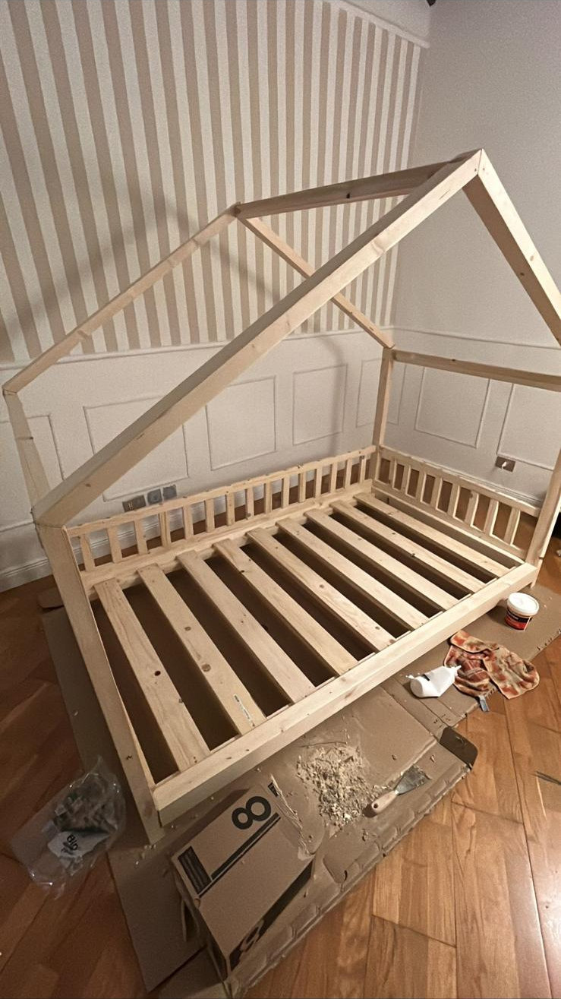
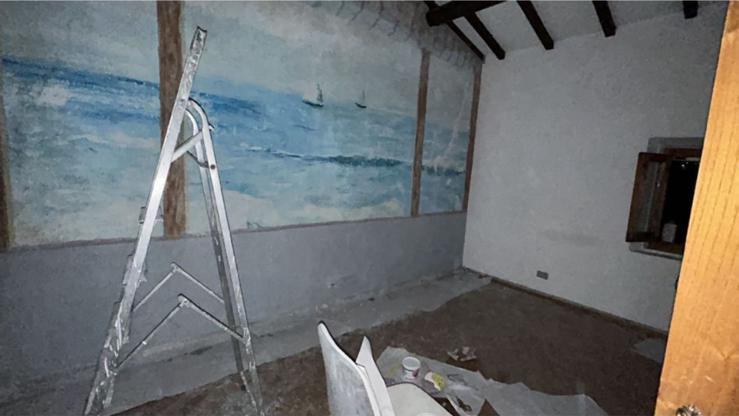
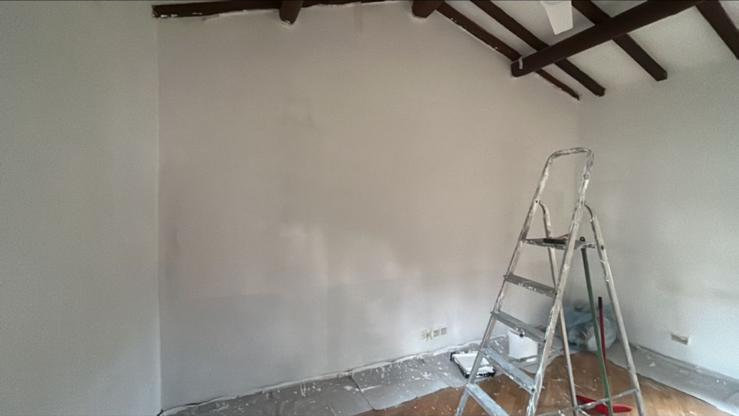
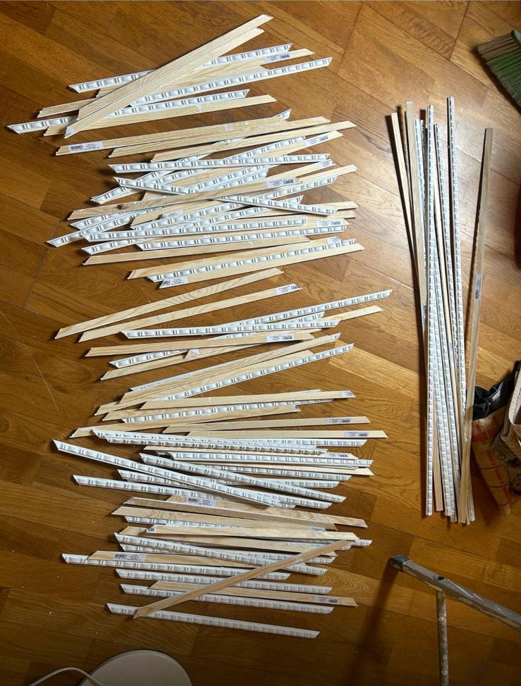
Da una cantina con scaffalature e macchie di umidità di risalita abbiamo ricavato una stanza: massetto nuovo, pavimento in gres effetto legno, pietra viva ripulita e stuccata, intonaco a fasce e piccoli punti luce.
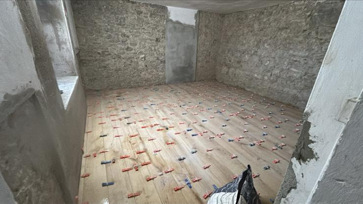
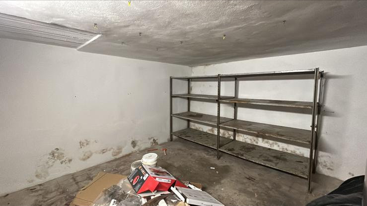
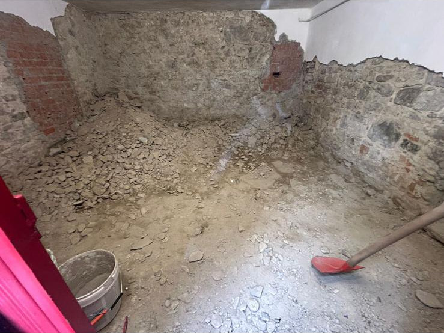
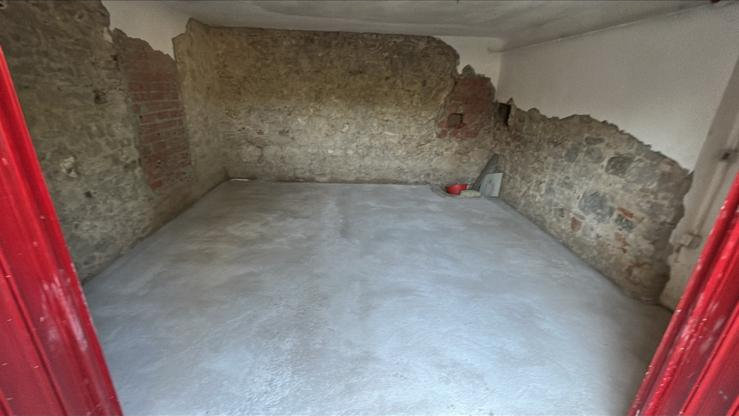
Preparazione degli attacchi di acqua e luce, quadro elettrico nuovo, montaggio della cucina e collaudo.
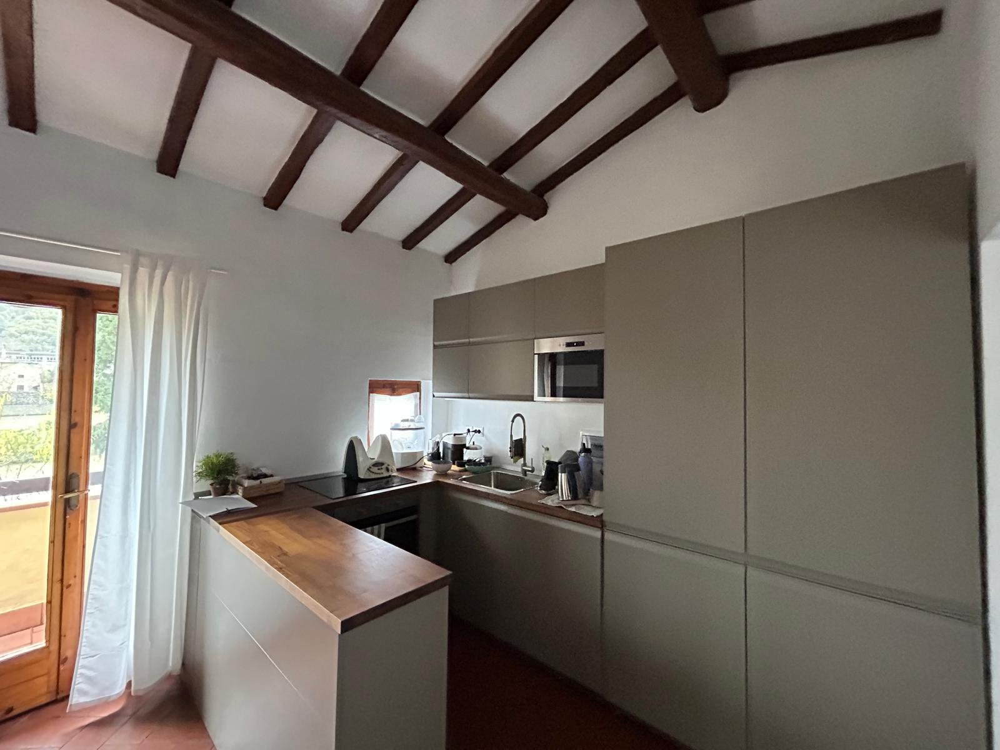
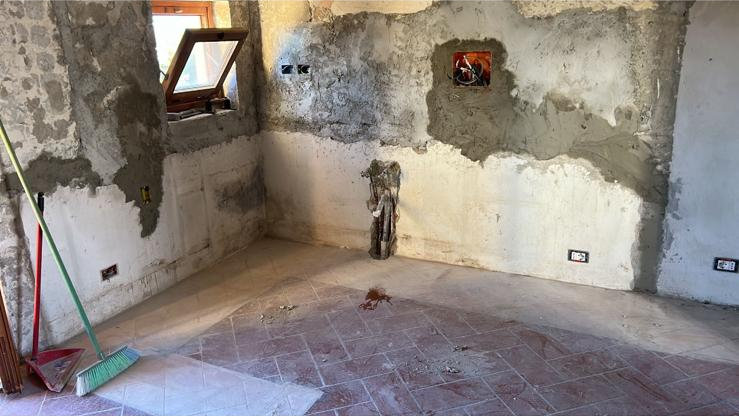
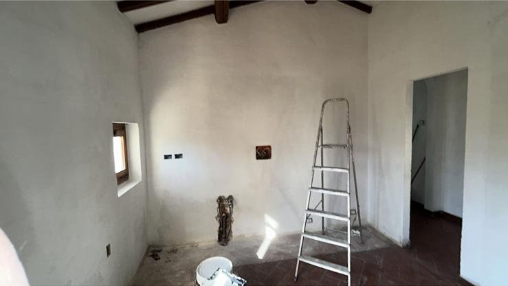
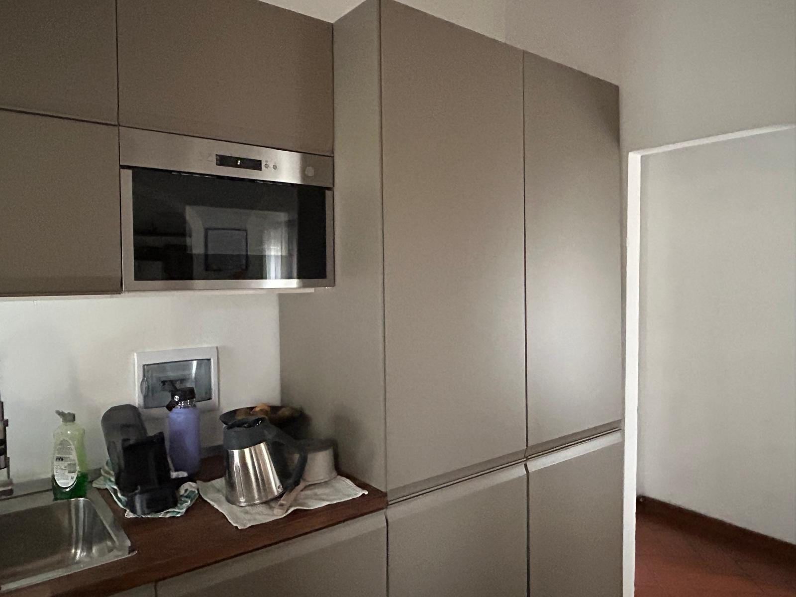
Tamponatura del vano garage, montaggio della finestra, intonaco, rasatura e finitura a sabbia grossa.
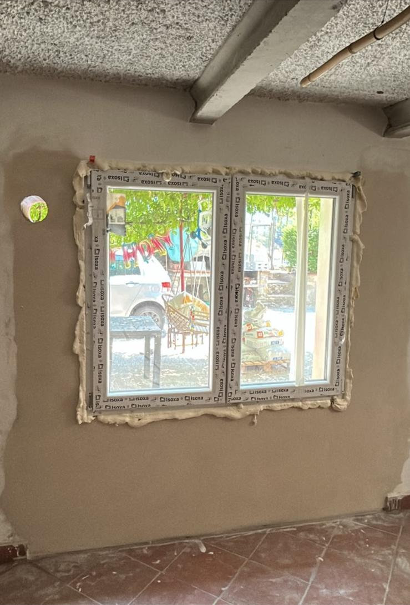
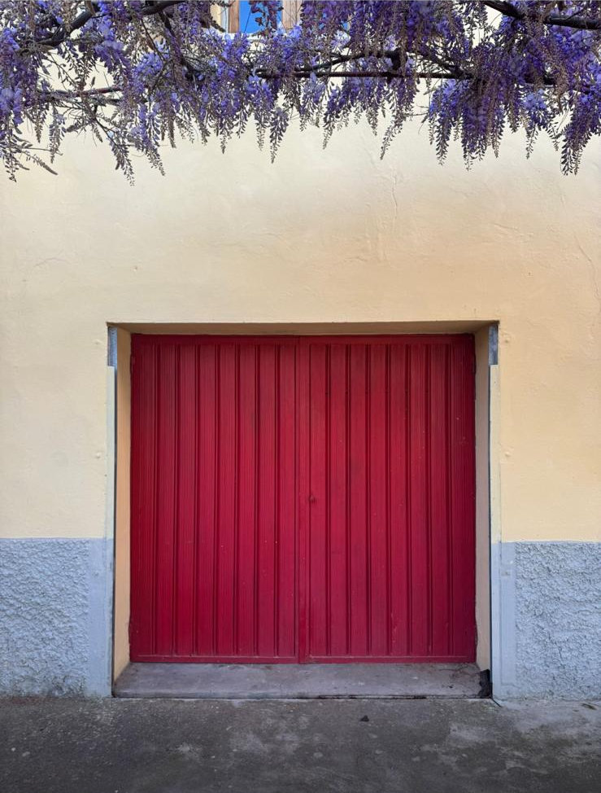
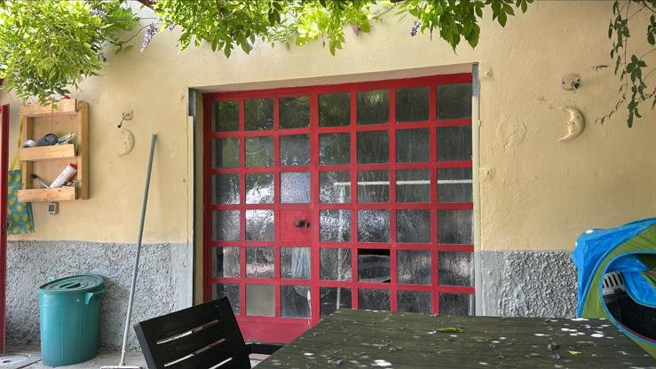
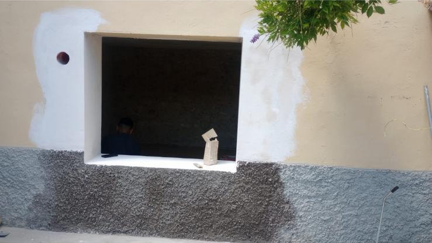
No. Il sopralluogo a Firenze e nei comuni vicini è gratuito e senza impegno.
Sì, per i lavori elettrici di nuova realizzazione o di rifacimento rilasciamo la Dichiarazione di Conformità prevista dal D.M. 37/08. Di norma è compresa nel preventivo.
A Firenze, in tutti i quartieri, e nei comuni vicini come Fiesole, Sesto Fiorentino, Scandicci, Bagno a Ripoli, Campi Bisenzio, Calenzano, Impruneta, Lastra a Signa e Signa.
No. Ci scrivete solo su WhatsApp o via SMS, niente chiamate. Il numero è +39 338 227 4066.
Il modo più rapido è un messaggio. Rispondiamo su WhatsApp o, se preferite, via SMS.
+39 338 227 4066
Solo WhatsApp o SMS, niente chiamate.
Quando si lavora, si lavora: rispondiamo appena posiamo gli attrezzi.